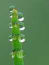

guttation

Definition: Guttation is the exudation of drops of xylem sap on the tips or edges of leaves of some vascular plants, such as grasses, and a number of fungi, which are not plants but were previously categorized as such and studied as part of botany. Guttation (from Latin gutta drop) is not to be confused with dew, which condenses from the atmosphere onto the plant or fungus surface and does not originate from within them. Guttation generally happens at night.
Source: Wikipedia
Wikipedia Page
Wikidata Page